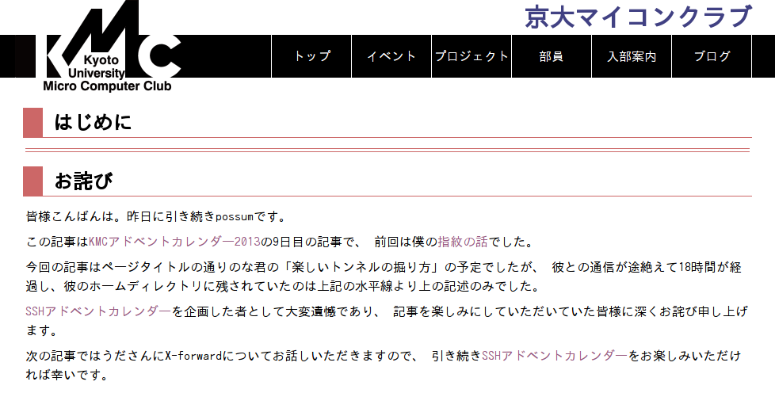

博士の異常な愛情
または私は如何にして心配するのを止めて参照透明 を愛するようになったか
KMC 1回 nona7
自己紹介
- ID: nona7
- おなまえ: [れべるぜろ] 名無しの人 A
- "のな" と呼ばれることが多い？
- 理学部1回生
- Twitter: @nonamea774


- 最近改二が実装された


KMC での活動
- プライベートクラウド計画 - 提督
- KMCアドベントカレンダー2013
- Coq勉強会
- RICOH and Java Developer Challenge Plus 2013
- Nchippaku
- Tumblr
- KanColle
このスライド
書きたくない！！！1111
閉じタグの対応とか考えるのヤダー
？？？「大丈夫よ, 司令官！ S式があるじゃない！」
というわけでS式からHTML に変換するの最近作りました.
まだ未発覚のバグ潜んでそう
とりあえずこのスライドはコンパイルできた
楽しいLazyK 入門
はじめに
- このスライドは難解プログラミング言語勉強会の宣伝です.
- あんまり詳しい話は今回はパス
- 言語の紹介ぐらいだけ
詳しくは難解〜に参加しましょう！
What is LazyK?
組み込み関数は3つだけ
- I = λx. x
- K = λxy. x
- S = λxyz. x z (y z)
I コンビネータ
- I x = x
- λx. x
- 引数を一つ取ってその引数を返す関数
- とったものをそのまま返すだけ
- Identity Combinator
実は SKK == I が成り立つのでなくてもいい
K コンビネータ
- K x y = x
- λxy. x
- 2引数をとって1つ目の引数を返す関数
- 「引数を一つ取って(xとする),
「引数を一つ取ってx を返す関数」
を返す関数」と言ってもいい
-- ややこしいなら一旦置いといていいかも - Constant Combinator
- Konstant(独) -- 今回調べてて知った
- 定数関数
S コンビネータ
- S x y z = x z (y z)
- λxyz. x z (y z)
- 3つ引数を取って, 1つ目と2つ目に3つ目を適用する関数
- Sharing Combinator
- 第三引数をシェアしてる感じ
(コンビネータスタイルの場合は)
めっちゃ簡単！！
Brainfu*k とか命令数多すぎ！！
組み合わせても謎の関数しかできないですよね 」
入力として受け取ったものを,
あなたが書いたプログラム- "謎の関数" - に引数として渡して
出てきたものが出力です.
正確には入力として渡された文字列がチャーチ数のリストとしてエンコードされてそれが渡されて……
-- 詳しくは難解〜で！！
サンプルコード
echo
Iサンプルコード
エラトステネスのふるい
K
(SII(S(K(S(S(K(SII(S(S(KS)(S(K(S(KS)))(S(K(S(S(KS)(SS(S(S(KS)K))(KK)))))
(S(S(KS)(S(KK)(S(KS)(S(S(KS)(S(KK)(S(KS)(S(S(KS)(S(KK)(SII)))
(K(SI(KK)))))))(K(S(K(S(S(KS)(S(K(SI))(S(KK)(S(K(S(S(KS)K)(S(S(KS)K)I)
(S(SII)I(S(S(KS)K)I)(S(S(KS)K)))))(SI(K(KI)))))))))(S(KK)K)))))))(K(S(KK)
(S(SI(K(S(S(S(S(SSK(SI(K(KI))))(K(S(S(KS)K)I(S(S(KS)K)(S(S(KS)K)I))
(S(K(S(SI(K(KI)))))K)(KK))))(KK))(S(S(KS)(S(K(SI))(S(KK)(S(K(S(S(KS)K)))
(SI(KK))))))(K(K(KI)))))(S(S(KS)(S(K(SI))(SS(SI)(KK))))(S(KK)
(S(K(S(S(KS)K)))(SI(K(KI)))))))))(K(K(KI))))))))))(K(KI)))))(SI(KK)))))
(S(K(S(K(S(K(S(SI(K(S(K(S(S(KS)K)I))(S(SII)I(S(S(KS)K)I)))))))K))))
(S(S(KS)(S(KK)(SII)))(K(SI(K(KI)))))))(SII(S(K(S(S(KS)(S(K(S(S(SI(KK))
(KI))))(SS(S(S(KS)(S(KK)(S(KS)(S(K(SI))K)))))(KK))))))(S(S(KS)
(S(K(S(KS)))(S(K(S(KK)))(S(S(KS)(S(KK)(SII)))(K(S(S(KS)K)))))))(K(S(S(KS)
(S(K(S(S(SI(KK))(KI))))(S(KK)(S(K(SII(S(K(S(S(KS)(S(K(S(K(S(S(KS)(S(KK)
(S(KS)(S(K(SI))K))))(KK)))))(S(S(KS)(S(KK)(S(K(SI(KK)))(SI(KK)))))
(K(SI(KK))))))))(S(S(KS)(S(K(S(KS)))(S(K(S(KK)))(S(S(KS)(S(KK)(SII)))
(K(SI(K(KI))))))))(K(K(SI(K(KI)))))))))(S(K(SII))(S(K(S(K(SI(K(KI))))))
(S(S(KS)(S(KK)(SI(K(S(K(S(SI(K(KI)))))K)))))(K(S(K(S(SI(KK))))
(S(KK)(SII)))))))))))(K(SI(K(KI))))))))(S(S(KS)K)I)
(SII(S(K(S(K(S(SI(K(KI)))))K))(SII)))))まとめ
- 難解プログラミング勉強会に参加しよう！
- ゆるふわです
- くわしくやります
- いろいろ今回は説明すっ飛ばした
- 参照透明な海に潜りましょう.
- ものまね鳥をまねましょう